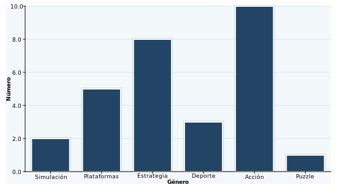

Gráficas en Python con PyCha
Mar 27, 2011 · 2 minute read · CommentsComputing
En una práctica de la Universidad pedían medir los tiempos de ejecución de un algoritmo paralelo empleando un número diferente de hilos en cada ocasión. En la correspondiente memoria debía aparecer una comparativa del rendimiento así que decidí adjuntar una gráfica para ilustrarlo mejor. Introducir los datos a manubrio iba a ser horriblemente tedioso. Me entró el gusanillo y me hice un sencillo script en Python que genera la gráfica utilizando PyCha. A continuación más información sobre esta genial biblioteca.
¿PyCha? Eso suena muy mal
PyCha (Python Charts) es una biblioteca libre (LGPL) creada por Lorenzo Gil que nos ayuda a generar gráficas con Cairo. A cambio de no incorporar un gran número de opciones resulta fácil de usar, lo cual es una gran ventaja. El único defecto que le veo es que no todas las opciones están documentadas. A pesar de ello, aprender a usar PyCha no me llevó más de diez minutos.
Instalación de PyCha en Debian
Instalar PyCha en un sistema basado en Debian como Ubuntu es harto sencillo. Partamos de que no cuentas con el intérprete ni el gestor de paquetes de Python, EasyInstall. Sólo has de seguir los siguientes pasos:
- Instalar Python junto a EasyInstall:
sudo apt-get install python-dev python-setuptools build-essential
- Descargar e instalar PyCha:
sudo eassy_install pycha
Generando una gráfica con PyCha
Construir una gráfica en PyCha no tiene complicación alguna. A continuación vamos a mostrar un ejemplo aunque puedes consultar la documentación oficial para más detalles. En el siguiente script obtendremos un diagrama de barras con el número de videojuegos que poseo en función de su género (cifras inventadas).
#!/usr/bin/env python
# -*- coding: utf-8 -*-
import cairo
import pycha.bar
def main():
# Ancho y alto de la gráfica
width, height = (550, 310)
# Superficie cairo
surface = cairo.ImageSurface(cairo.FORMAT_ARGB32, width, height)
# Tomamos los datos
data = [('Simulación', 2),
('Plataformas', 5),
('Estrategia', 8),
('Deporte', 3),
('Acción', 10),
('Puzzle', 1)]
# Los cargamos en el dataSet
dataSet = (
('Puntos', [(i, l[1]) for i, l in enumerate(data)]),
)
# Opciones de la gráfica
ticks = [dict(v=i, label=l[0]) for i, l in enumerate(data)]
options = {
'legend': {'hide': True},
'axis': {
'x': {
'ticks': ticks,
'label': 'Género',
},
'y': {
'tickCount': 5,
'label': 'Número',
}
},
'background': {
'chartColor': '#f3f9fb',
'lineColor': '#d1e5ec'
},
'colorScheme': {
'name': 'gradient',
'args': {
'initialColor': 'blue',
},
},
}
# Creamos la gráfica
chart = pycha.bar.VerticalBarChart(surface, options)
chart.addDataset(dataSet)
chart.render()
# La guardamos en un fichero .png
surface.write_to_png('chart.png')
if __name__ == "__main__":
main()
El resultado es el siguiente:
